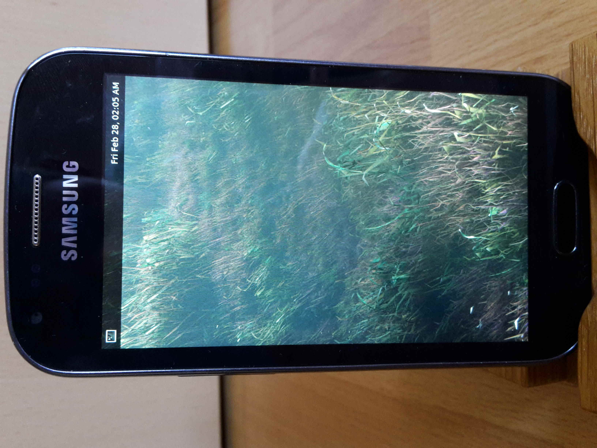

Samsung Galaxy Ace II X (samsung-kylessopen)
The Samsung Galaxy Ace II X (GT-S7560M) is also sold as the Samsung Galaxy Trend (GT-S7560).
|  | |
| Manufacturer | Samsung |
|---|---|
| Name | Galaxy Ace II X |
| Codename | samsung-kylessopen |
| Released | 2012 |
| Category | testing |
| Original software | Android 4.0.4 |
| Hardware | |
| Chipset | Qualcomm Snapdragon S1 (MSM7227A) |
| CPU | 1 GHz ARM Cortex-A5 |
| GPU | Adreno 200 |
| Display | 480x800 WVGA |
| Storage | 4GB |
| Memory | 768MB |
| Architecture | armv7 |
{kind=link}
| USB Networking |
Works
|
|---|---|
| Flashing |
Works
|
| Touchscreen |
Works
|
| Display |
Works
|
| WiFi |
Broken
|
| FDE |
Broken
|
| Mainline |
Broken
|
| Battery |
Broken
|
| 3D Acceleration |
Broken
|
| Audio |
Broken
|
| Bluetooth |
Broken
|
| Camera |
Broken
|
| GPS |
Broken
|
| Mobile data |
Broken
|
| SMS |
Broken
|
| Calls |
Broken
|
| USB OTG / USB-C Role switching | |
| NFC | |
| Accelerometer |
Broken
|
|---|---|
| Magnetometer | |
| Ambient Light | |
| Proximity | |
| Hall Effect | |
| Barometer | |
| Power Sensor | |
| Camera Flash | |
|---|---|
| Keyboard | |
| Touchpad | |
| USB-A | |
| HDMI/DP | |
| Ir TX | |
| Ir RX | |
| Stylus | |
| Haptics | |
| Ethernet | |
| FOSS bootloader | |
Users owning this device
Contributors
Installation
First step is to install pmbootstrap. If you already had pmbootstrap installed, make sure that it is updated to the latest version and update your files, to get the newest patches:
$ pmbootstrap pull
Then run the following in a Linux terminal:
$ pmbootstrap init
Choose samsung-kylessopen for this device. For an overview of the graphical interfaces, have a look at the table below.
Install the image:
$ pmbootstrap install
Full disk encryption currently doesn't work on this device, so it should be turned off for now.
Flashing
Ensure that the USB cable is disconnected, then hold down Volume Down + Home for a few seconds as the system boots. This puts the device in flash mode. Once in this mode, enter
$ pmbootstrap flasher flash_rootfs
to install the rootfs. Once this is finished, put yourself back into flash mode and enter
$ pmbootstrap flasher flash_kernel
to flash the kernel.
Graphical Interfaces
| Interface | Info | Working |
|---|---|---|
| none | SSH possible, but 'postmarketos loading...' stays around with distorted graphics pmaports#280 | P |
| GNOME 3 | GNOME needs some time to boot up, but works in general. Suitable for dogfooding. | Y |
| i3wm | works, but as you have no hardware keyboard, you cannot use it yet (chance to get it work on touch only devices too) | N |
| Kodi | fails to install: dependency missing (maybe fixable) | N |
| MATE | works fine, suitable for dogfooding | Y |
| [1]Phosh | SSH works, but does not show up after 5 minutes, if this kernel has no DRM-Support, Phosh won't work, (has to be checked) | P |
| Plasma-Desktop | Rootfs not found at startup | N |
| [2]Plasma Mobile | SSH works, but UI does not show up | P |
| Plasma Mobile Extras | installation does not work, rootfs not found (has to be checked, because it should work as good as plasma-mobile(?)) | N |
| Shelli | SSH works, but has distorted graphics and the gestures do not work | P |
| [3]Sway | SSH works, but no UI shows up | P |
| [4]Weston | works fine, suitable for development | Y |
| [5]Xfce4 | works partial, the desktop does show up completely | P |
Issues
Here is a list of tasks that are currently being worked on for this device, from highest priority to lowest.
| Issue | MR | Wiki | Description |
|---|---|---|---|
| pmaports#278 | The_Mainline_Kernel | Device isn't mainlined. | |
| pmaports#242 | Device reboots every 10 minutes. | ||
| pmaports#248 | WiFi | No Wlan internet connection. | |
| pmaports#249 | Audio | Audio doesn't work. | |
| pmaports#279 | Device sometimes freezes while booting. | ||
| pmaports#250 | Framebuffer[6] | osk-sdl and charging-sdl don't work. | |
| pmaports#281 | Bluetooth[7] | Bluetooth doesn't work. | |
| pmaports#280 | Distorted graphics before a window manager starts. |
Xwayland
If you want to run xeyes, it says:
Error: Can't open display:
Hardware
| Hardware | Working | Drivers | Firmware | Info |
|---|---|---|---|---|
| Battery | Y | Model No: EB425161LU, 3.8v, Li-ion 5.70Wh, 1500mAh | ||
| Touch Screen | Y | Capacitive | ||
| Front Speaker | N | |||
| Display | Y | |||
| 3 buttons (home) | ||||
| Microphone | N | |||
| MicroUSB Port | Y | |||
| JTag Port[8] | ||||
| 3 buttons (vol+pow) | ||||
| SIM Card Reader | ||||
| Back Speaker | N | |||
| AUX Port | N | |||
| Back Camera | ||||
| Flashlight | ||||
| Front Camera | ||||
| MicroSD Card Reader | ||||
| Atheros chip | Likely WiFi but no confirmation in sight. 600SG-CF18 \n PPCRII_OOIC \n 1217 TM | |||
| White mystery chunk | N | DMSP1115ASM-40, A3425B2, Contains rear speaker & AUX | ||
| CSR7828 | Looks like a Qualcomm chip according to DDG, could be Bluetooth | |||
| eMMC[9] | Y | Samsung KMJJS000WA-B409, 4GB rw, 768MB RAM | ||
| Qualcomm RTR6285A | ||||
| Qualcomm PM8029 | ||||
| SoC[10] | Qualcomm Snapdragon[11] S1 MSM7227A | |||
| CPU | Y | (integrated into SoC) single-core ARM Cortex-A5[12] 1GHz | ||
| GPU | Y | (integrated into SoC) singe-core Qualcomm Adreno[13] 200 245MHz WVGA | ||
| Modem | (integrated into SoC) UMTS/MBMS/GSM, Multimedia Broadcast Multicast Service baseband support | |||
| DSP[14] | (integrated into SoC) 350MHz Qualcomm Hexagon QDSP5[15] DSP | |||
| GPS | (integrated into SoC) gpsOne[16] Gen 7 GPS module | |||
| Viberator | Small button-battery sized motor, typical model type in cell phones. |
Bluetooth is likely an external chip: "Bluetooth 4.0 (external WCN2243); 802.11b/g/n (external AR6003/5, WCN1314)" WiFi is likely as well, but camera support is integrated.
According to some websites this device may also have an FM radio, an accelerometer, a proximity sensor and a compass. I haven't found or discovered those peripherals myself but I know the device has a vibrator which most websites fail to mention.
See also
Interesting Links
- XDA-Subforum for Samsung Galaxy Ace devices
- iFixit-Device-Page
- TWRP-Device-Page
- Firmware of the Device collected unofficial
- Stock-Android-ROM and further Information
Gallery
I have higher resolutions of all these pics, but they're to large to upload here. Feel free to message me with requests.
{kind=link}
{kind=link}
{kind=link}
{kind=link}
{kind=link}
{kind=link}
{kind=link}
{kind=link}